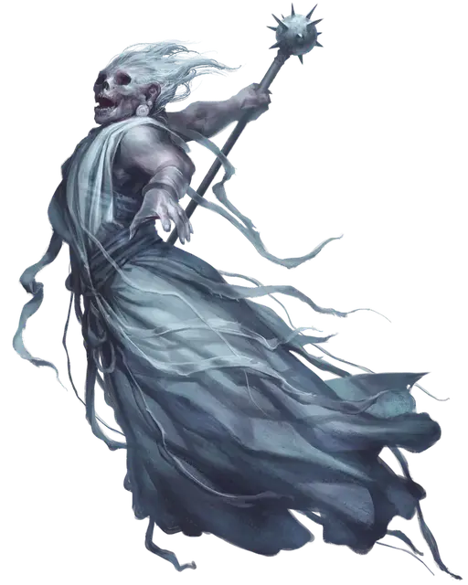

Привидение облачного великана
Cloud Giant Ghost
Огромная Нежить

Класс Доспеха 15 (природный доспех)
Хиты 104 (16к12)
Скорость 0 футов, летая 40 футов (парит)
| мод | спас | ||
|---|---|---|---|
| СИЛ | 27 | +8 | +8 |
| ЛОВ | 11 | +0 | +0 |
| ТЕЛ | 10 | +0 | +0 |
| мод | спас | ||
|---|---|---|---|
| ИНТ | 12 | +1 | +1 |
| МДР | 16 | +3 | +7 |
| ХАР | 17 | +3 | +7 |
Навыки Восприятие +7
Сопротивление урону холод
Иммунитет к урону некротическая энергия, яд
Иммунитет к состояниям окаменение, опутанность, отравление, сбивание с ног, захват, паралич, очарование, испуг, истощение
Чувства тёмное зрение 120 футов, пассивное Восприятие 17
Языки Общий, Великаний
Опасность 9 (5000 опыта)
Бонус мастерства +4
Особенности
Эфирное зрение. Зрение привидения простирается на 120 футов на Эфирный План, когда оно находится на Материальном Плане, и наоборот.
Бестелесное перемещение. Привидение может перемещаться сквозь других существ и предметы, как если бы они были труднопроходимой местностью. Оно получает урон силовым полем 5 (1к10), если оканчивает ход внутри предмета.
Регенерация. Привидение восстанавливает 10 хитов в начале своего хода. Если он получает урон излучением, эта особенность не действует в начале следующего хода приведения. Привидение умирает только если начинает свой ход с 0 хитов и не может регенерировать.
Действия
Мультиатака. Привидение совершает две рукопашные атаки.
Спектральное оружие. Рукопашная атака оружием: +12 к попаданию, досягаемость 10 фт., одна цель. Попадание: 21 (3к8 + 8) урона силовым полем.
Эфирность. Привидение входит на Эфирный План с Материального Плана, или наоборот. Оно видимо на Материальном Плане, пока находится в Пограничном Эфире, и наоборот, хотя не может воздействовать на то, что находится на другом плане, и становиться целью эффектов, происходящих на другом плане.
Врождённое колдовство. Базовой характеристикой заклинаний привидения является Харизма. Он может накладывать следующие заклинания, не нуждаясь в материальных компонентах:
• Неограниченно: туманное облако [fog cloud]
• 3/день: телекинез [telekinesis]
• 1/день: власть над погодой [control weather]
Вой ветра (Перезарядка 6). Привидение испускает ужасающий вой, призывающий ледяной, пронизывающий до костей ветер. Порывы ветра захлёстывают до трёх существ по выбору привидения, которых он может видеть в пределах 60 футов. Каждая цель перемещается к привидению на расстояние до 20 футов и должна совершить спасбросок Телосложения Сл 15, получая 16 (3к10) урона холодом при провале и половину этого урона при успехе.